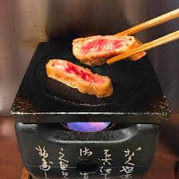

1. 이치란 라멘
이치란 라멘은 일본을 대표하는 라멘이라고 해도 무방할 정도로 일본 전역에 많은 점포를 가지고 있으며 체인점이라고 생각하면 된다. 그렇기 때문에 도쿄만 해도 많은 매장이 자리잡고 있어 찾아가기 어려움은 없다. 또한 24시간 영업하기 때문에 시간에 제한없이 언제든지 가서 먹을 수 있다는 장점이 있습니다.
한국 관광객들이 많이 방문하기 때문에 한국어 메뉴도 있어서 주문할때 언어의 어려움 없이
주문 할 수 있으며 맛,기름진 정도, 마늘, 파, 차슈, 소스, 면삶기 등 본인의 취양에 맞춰서 라멘을 맞춤 주문 할 수 있습니다. 더 먹고싶은 토핑이 있다면 추가로 주문하여 먹고 싶은 만큼 넣어 먹을 수 있습니다.
이치란 라멘 단품 (890엔)
2. 모토무라

모토무라는 규카츠 맛집으로 유명합니다. 시부야에 본점이 있으며 여러곳에 점포를 가지고 있어서 가까운 곳에 찾아가 먹을 수 있습니다.
규카츠란 돼지고기를 튀김옷을 입혀 튀긴 돈까스와 조금 다르게 돼지고기 대신 소고기를 튀긴 것으로 '규'는 일본어로 '牛'를 의미합니다.
엄선된 소고기를 단 60초만 튀겨내어 겉은 바삭 속은 촉촉한 규카츠는 1인용 작은 화로가
준비되어져 본인이 원하는 만큼의 굽기로 구워 먹을 수 있습니다.
가장 많이 주문하는 소고기 로스카츠 보리밥 정식은
규카츠 130g에 양배추 샐러드, 보리밥, 미소시루, 오신코(절인채소)로 구성되어있으며
소스는 간장, 소금, 와사비가 있어서 취향에 맞게 찍어 먹으면 됩니다.
100엔을 추가하면 호불 호가 갈리지만 마 갈은 것을 밥위에 뿌려 먹을 수 있습니다.
도쿄에서 맛있는 규카츠를 드시고 싶으시다면 모토무라를 추천 합니다.
소고기 로스카츠 보리밥 정식 (130g, 1200엔),
big 소고기 로스카츠 보리밥 정식 (180g 1500엔)
영업시간 : 11:00 ~ 23:00
3. 스시잔마이
스시잔마이는 츠키지시장이 본점으로 가격대비 맛이 좋아서 현지인도 좋아하는 초밥 체인점 입니다.
사실은 일본에서 가장 먼저 연중무휴・24시간 영업하는 초밥집을 오픈한 것이 이곳 「스시잔마이 본점」이었습니다. 그래서 경매가 끝난 새벽시간에 와도, 밤 늦게 와도 언제나 초밥을 먹을 수 있습니다.
카운터석에 앉으면 눈앞에 신선한 생선들이 냉장 케이스에 진열되어 있는 것을 볼 수 있습니다. 냉장 케이스 너머 조리사인 아티마에가 생선을 해체하거나 초밥을 만드는 모습을 가까이에서 볼 수 있습니다.
그중에서도 초밥 재료 중에 최고의 인기를 자랑하는 오토로(大トロ. 참치 대뱃살. 사진의 가장 왼쪽 아래)는 입안에 넣은 순간에 녹는 듯한 식감이며, 참치 손질에 절대적인 자신이 있는 점포만의 깊은 맛이 있습니다.
츠키지시장에서 바로 가져온 식자제로 만든 싱싱한 초밥을 드시고 싶으시다면 스시잔마이 본점을 추천 드립니다.